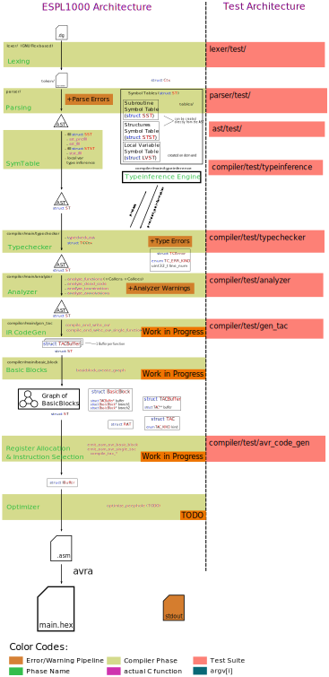

Architecture
ESPL1000 consists of 3 Programs which share source code and data formats.
- dragon-lexer
- dragon-parser
- sd
"dragon-lexer" tokenizes ESPL1000 source files, (.tokens ending) and
"dragon-parser" parses these tokens into an AST.
"sd" then transpiles the AST into C source code.
